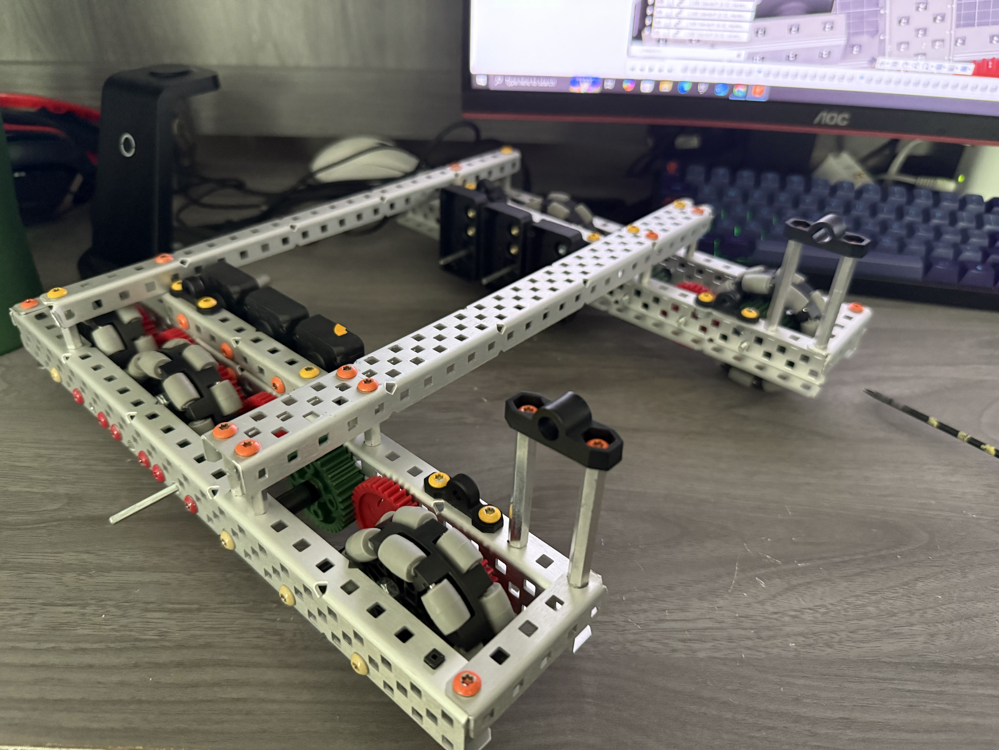

Step 01 · Drive prototype
Establishing a rigid foundation
The season began with a compact drivetrain used to validate packaging, wheel placement, chassis stiffness, and the space available for future scoring mechanisms.
Design focus: rigidity, low center of gravity,
accessibility, and predictable handling.